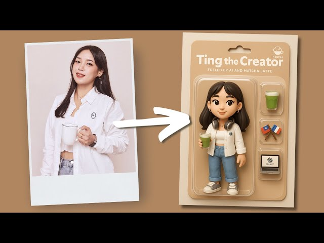
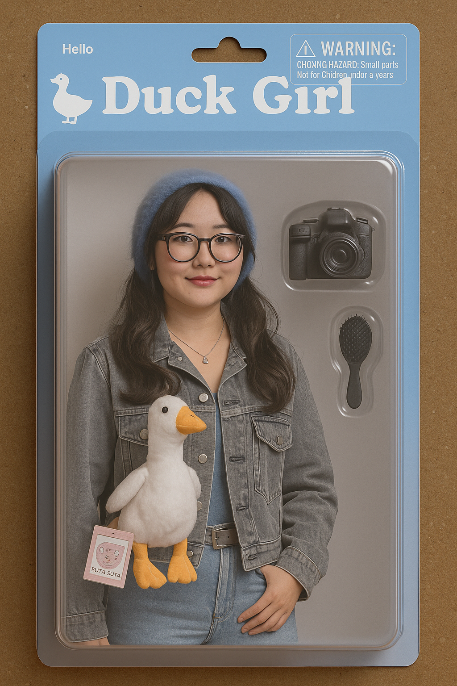
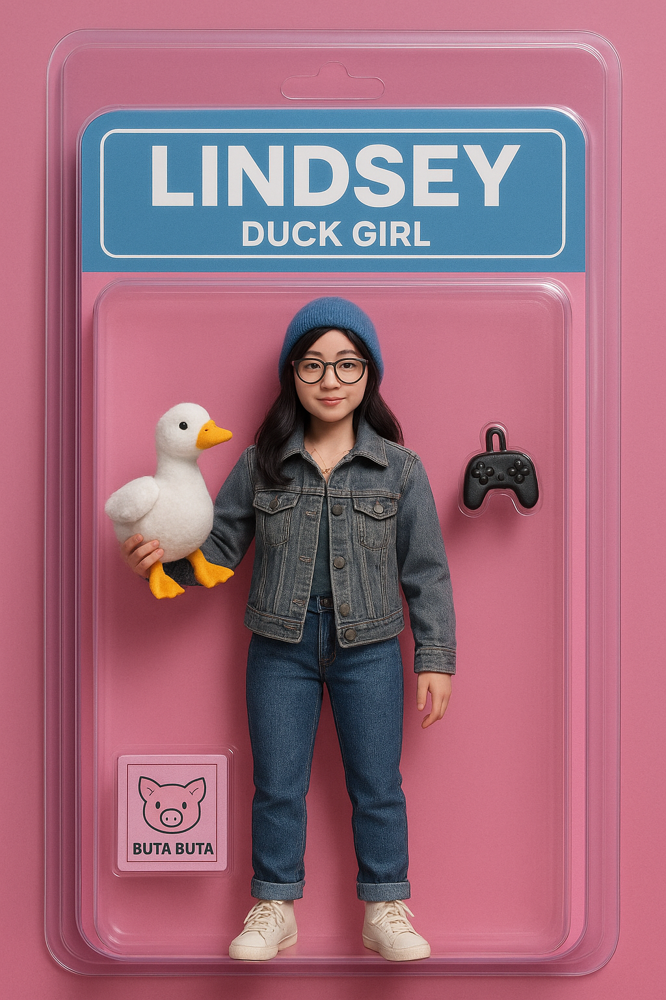
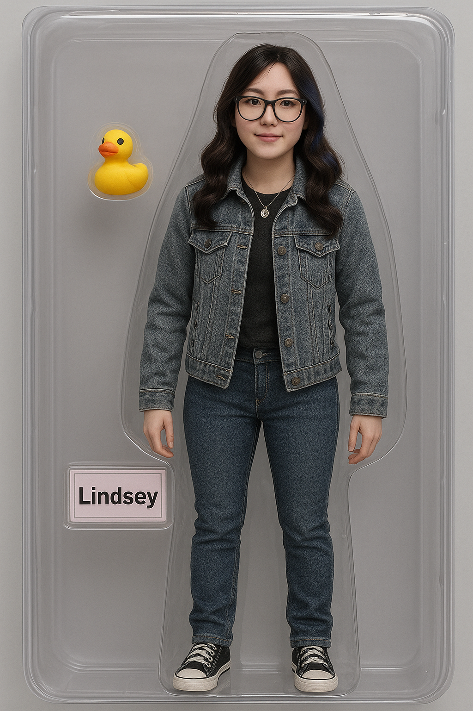
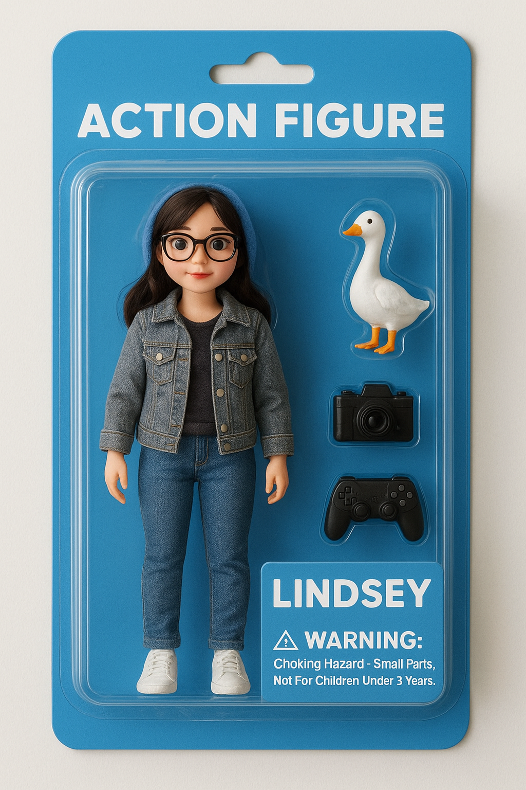

If you’ve been on the internet lately, you would know that some influencers have taken it upon themself to use LLMs to create a digital action figure of themself. Most of the results posted online turn out beautifully and life-like, just like true products. Others, however, could create an LLM digital disaster. My goal is to create an action figure product I can be satisfied with.
## The Code
I used the ChatGPT 4.0 model to turn me into an action figure using the prompt below.
Create a realistic action figure of the person in the photo attached, placed inside a clear plastic box. The image should look like a real toy or doll that you can purchase in stores. Please include relevant toy accessories in the accessories in the box.
This created the image below.

I really loved how the LLM was immediately able to bring my idea to fruition. The box of the figure is very lifelike and well-designed. However, I had some concerns in this generation regarding the lack of a full-body toy and the need for more specifity to the doll branding. So, to combat this, I prompted the model a revision as written below.
Looks great! Can you revise the image so that the action figure is a full body figure (head to toe). Also, please add the name “Lindsey” along with Duck Girl.

This was a big improvement from the first generation as this now includes a full-body doll. However, now I wanted to make revisions on the accessories incorporated in the box and revise the name of the product.
Remove duck girl. Replace the “buta buta” pig item with the duck. Do not make the girl hold the duck.

Now, this was a very interesting generation. At this point, ChatGPT generated something that went so far beyond my original intentions, and I wanted to give more guidance to ChatGPT rather than relying on its “memory” of the first prompt, and being specific on which elements to keep or get rid of. The action figures had also been generated to the point where they looked too eerily life-like. To minimize this, I prompted the LLM to make the figure more youthful and doll-like in hopes of creating an image with a more cartoon-like appearance.
Let’s return back to the first original doll design. Keep the blue packaging. Make the figure full body. Use the white goose, camera, and game controller as a doll accessory. The box should have relevant product packaging titles and labeling, and must also include the name “lindsey.” Please make the action figure look more youthful and doll-like while staying true to the original picture.

## Reflection
This was a very interesting activity to do with an LLM. It was fascinating to see how the LLM chose colors for the toy based on the existing colors in the photo, and added accessories based on the items it could identify in the image. It shows how the LLM used the reference image not only to create the action figure human in itself but also the all the other elements present in the generated image.
Although it took a few tries to get my desired product with ChatGPT, the revision process progressed much more quickly than I had originally imagined and it was interesting to see how the LLM would take my feedback and incorpate it into the next image. I was especially curious to see how different each generation would look like and how much ‘inspiration’ it would keep or incorporate into the next generated image. I see now that each image seems to be developed quite independently from one another, keeping only the basic instructions I gave consistent. This was a fun learning experience!